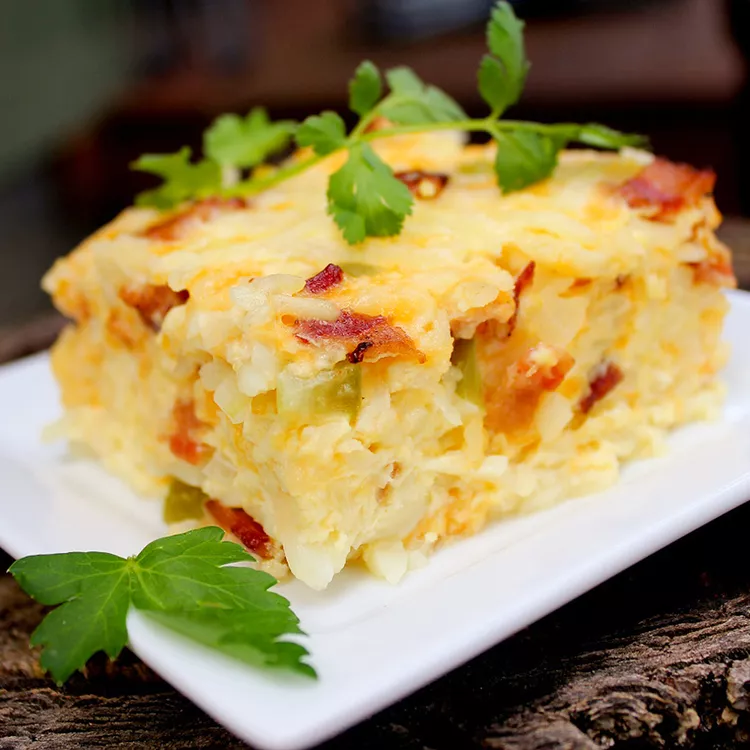

Breakfast Casserole

Description
This breakfast casserole will instantly become a hit in your household. This dish is so simple all you have to do is gather, combine, bake, and enjoy your new go to breakfast. This can be enjoyed same day or stored as a breakfast meal prep option for you if you need something quick in the morning.
ingredients
First, let's grab a few items -
- cooking spray
- 1 pound bacon
- 8 large eggs
- 2 cups milk
- 3 cups shredded cheddar
- 1/4 cup diced onion
- 1/4 cup diced green bell pepper
- 1 (16 ounce) package frozen hash brown potatoes, thawed
Directions
Time to put it all together!
- Preheat the oven to 350 degrees F (175 degrees C). Lightly grease a 7x11-inch casserole dish.
- Fry bacon in a large, deep skillet over medium-high heat until evenly browned, about 10 minutes. Drain on a paper towel-lined plate. Crumble.
- Beat eggs and milk together in a large bowl; mix in cheese, bacon, onion, and green pepper. Stir in thawed hash browns. Pour mixture into prepared casserole.
- Cover with aluminum foil and bake in preheated oven for 45 minutes. Uncover and bake until eggs have set, another 30 minutes.
- Cut up into whatever portions you desire and serve. This can be frozon or refrigerated for meal preps if you wish.
Home